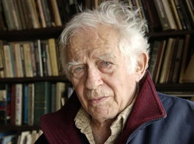
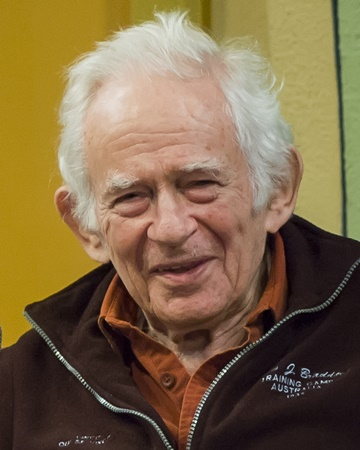

.Mailer: “Xã hội chúng ta ngày càng tự ngắm mình và do những đầu óc hẹp hòi dẫn dắt, do truyền hình, con người đã mất thói quen suy nghĩ kéo dài hơn 7 phút”.
Với những chiếc áo thun lòe loẹt, ông có cái dáng vẻ nghịch ngợm của những ông già Mỹ đã nghỉ hưu nhưng không hề lạc hậu với thời thế. Sự thực Norman Mailer [Sinh 1923] là thế này: Một nhà văn nổi tiếng của Mỹ - từng đoạt 2 giải Pulitzer - người biết nhảy lên toa tàu của hiện thực, từ những huyền thoại sáng tạo ra sự vĩ đại của nước Mỹ (Marilyn, Kennedy, CIA…) tới những câu hỏi chưa từng được làm sáng tỏ (thanh giáo, bạo lực). Trong tác phẩm mới đây Kinh Phúc Âm theo đức Chúa con, một dân Do Thái ở Brooklyn - cưới 6 lần, cha của 9 đứa trẻ, tìm cách giải thích cho những tín đồ đạo Cơ Đốc và những người khác biết thực chất những suy nghĩ của Chúa Jésus từ lúc sinh ra cho tới khi chết. Mọi người chẳng hiểu ông đùa cợt, chế giễu các độc giả sùng đạo hay là ông viết một cách nghiêm chỉnh cùng với niềm lo lắng cao thượng để tìm hiểu, thuật lại mọi ngờ vực, mọi cám dỗ và những hoạt động của một hình mẫu dũng cảm - Chúa Jésus. Không, ngòi bút của Mailer không dúng sâu vào dị giáo. Thực lòng ông muốn được thử hóa thân vào con người anh hùng cao cả nhất, không ai sánh kịp của thời đại chúng ta. Và ông cũng muốn đánh giá trào lưu phục hưng tôn giáo hiện nay. Từng là nhân vật theo chủ nghĩa Mác, và là người bảo thủ cánh tả, ông chưa bao giờ ngừng chỉ trích, lên án nước Mỹ. Ngoài lòng hăng say, cũng chính do lối sống tự do đã khiến ông càng trở nên quyến rũ. Tạp chí Paris Match đã có cuộc phỏng vấn ông:
* Ông là người hạnh phúc chứ?
– Có lẽ còn hơn cả phần tôi xứng đáng được hưởng.
* Những xúc cảm mạnh mẽ và niềm hạnh phúc an bình, trong hai điều này ông thích gì hơn?
– Hai yếu tố này phủ định lẫn nhau. Lý tưởng nhất là dung hòa được chúng. Hạnh phúc bình dị thì nhàm chán nhưng những cảm xúc mạnh mẽ mà không có sự êm ả thanh bình thì dẫn đến trạng thái hỗn mang, tội ác giết người và tự sát.
* Trong cuộc đời ông, những kỷ niệm đẹp nhất và tồi tệ nhất là gì?
– Chẳng thể nào đặt câu hỏi này cho một nhà viết tiểu thuyết được đâu. Tôi luôn giữ những kỷ niệm của riêng mình vì đó là nguồn cảm hứng của tôi. Khi muốn sáng tác thì chính qua chúng, tôi lẩn trốn vào trong thế giới tưởng tượng.
* Điều gì khiến ông có những cảm xúc mãnh liệt nhất: Cuộc sống lứa đôi, cuộc sống làm cha hay là viết lách?
– Đời sống tình ái, trừ khi tôi cãi nhau với vợ.
* Ông có tin rằng con người vẫn có khả năng hào hiệp, độ lượng hay không?
– Không, đơn giản là tính vui vẻ cũng chẳng còn. Từ 15 hay 20 năm nay, người ta chỉ toàn hướng đến lòng ham tiền ham của và tính bủn xỉn. Hai nước: Nga và Mỹ đã trang bị vũ khí cho mình nhiều gấp 10 lần lượng đủ để hủy diệt toàn bộ hành tinh này. Tôi quen biết nhiều nhà tỷ phú, những người mà bằng những trò gian xảo của mình trên thị trường tài chính, luôn luôn có quyền lực to lớn đủ tàn phá nền kinh tế thế giới. Tuy rằng họ biết mình không cần tiền bạc để làm gì nữa nhưng lại vẫn luôn bị nó cám dỗ. Không, loài người chẳng còn khả năng độ lượng. Xung quanh mình tôi chỉ thấy tràn ngập thói hám lợi, tham lam…
* Trong một xã hội phổ biến thói vị kỷ?
– Tự yêu mình, ngày càng tự yêu mình! Và được dẫn dắt bởi những đầu óc ngày càng hẹp hòi.
* Tại sao lại hẹp hòi?
– Thứ nhất, là do bộ não của chúng ta không còn biết suy luận tổng hợp, nó đã không được tạo ra để quan sát vô vàn điểm tạo nên một hình ảnh. Hình ảnh tác động lên mắt, lên trí não chúng ta mạnh hơn là những cái cấu thành nó và lý do của nó. Tiếp theo là do truyền hình và làn sóng quảng cáo cứ 7 phút một lần khiến suy nghĩ của ta bị đứt đoạn. Mọi người mất thói quen suy ngẫm lâu hơn 7 phút về mọi vấn đề. Thậm chí, tại nhà thờ, mọi người chẳng còn thời gian nghe giảng đạo lâu hơn 7 phút. Còn lũ trẻ thì hoàn toàn mất khả năng tập trung. Mới 3 tuổi đầu người ta đã luyện cho chúng việc chú tâm vào một vấn đề nào đó không quá 7 phút.
* Theo ông có phải tuổi già thì có những lợi thế nào đó không?
– Có nhiều! Những phụ nữ trẻ sẽ mỉm cười âu yếm với ta. Và nói nghiêm chỉnh, nếu như ta giữ được sự nhạy bén về trí tuệ, tuổi già vô cùng hấp dẫn, vì quan niệm về các giá trị đã thay đổi. Cuối cùng, tôi nhận thấy rằng tất cả mọi điều mà mình hoài niệm đều không có giá trị. Vậy là thật vô ích khi lãng phí sức để nhớ về điều mà không đáng để nghĩ. Tôi rất tâm đắc một câu châm ngôn của các tín đồ đạo Hindu “Bạn đừng mất thời gian để suy nghĩ tới những sự việc mà với chúng bạn không thể hành động”.
* Với ông điều quan trọng nhất để truyền lại cho một đứa trẻ? Dạy cho chúng biết cách đương đầu với những khó khăn trong cuộc sống hay là phát triển tính nhạy cảm?
– Phải nỗ lực dạy chúng trở nên trung thực. Vì con người ta khi sinh ra đã gian dối, nó nằm trong tội tổ tông. Tất nhiên cũng cần giáo dục bọn trẻ biết cách tự bảo vệ mình. Nhưng biết rằng tự bảo vệ mình là một đặc quyền, không được lạm dụng điều đó. Nuôi dạy con trẻ là một nghệ thuật của sự cân bằng, một nghệ thuật mà các quy tắc luôn thay đổi. Biết điều chỉnh những quy tắc này là một người cha tốt. Cả những bậc cha mẹ tồi tệ nhất cũng có bản năng này.
HƯƠNG THỦY

.Được nhiều người coi là một nhà văn Mỹ lớn nhất còn sống, Norman Mailer còn là người hủy hoại lớn nhất các huyền thuyết. Ở tuổi 75, ông vừa viết xong cuốn tự truyện của Jésus - Sách Phúc âm theo Chúa Jésus.
* Sau tất cả những trò ngông cuồng của ông, bây giờ, ông lại tự coi mình là Đức Jésus?
-Tôi không thấy mình ở địa vị Jésus. Ngược lại, Jésus gần như ở trong mọi người chúng ta. Như vậy, tôi có một phần trong đó. Và tôi sáng tạo lại.
* Để kiếm tiền bằng cách làm cho ông ta nói lên?
– Chính ông ta nói, tất nhiên rồi. Nhưng dù sao cũng còn tới 95% công việc là do tôi chịu trách nhiệm. Jésus không thể làm tất cả mọi việc.
* Ông để Jésus nói ở ngôi thứ nhất. Cũng khá táo bạo đấy chứ!
– Ở tuổi tôi, cùng với trọng lượng và năm tháng, người ta không đủ tự hào để tỏ ra… rất kiêu ngạo!
* Người ta đã biết tới sách Phúc âm theo các thánh Matthiew Marc, Luc và Jean. Và bây giờ là sách Phúc âm theo Norman…
– Tôi không phải là một vị thánh. Tôi chỉ là một nhà văn.
* Để kiếm sống, ông đã viết những tiểu sử của Marilyn Monroe, Mike Tyson, tổng thống Kennedy và kẻ ám sát ông ta Lee Harvey Osward, Picasso, tất cả ít hay nhiều đều bị đối xử thô bạo… Ngày nay, thay vì tiểu sử của Jésus, ông đã có thể viết tiểu sử của Judas…
– Đúng thế, điều đó cũng hết sức chính đáng. Nhưng tôi có sự lựa chọn của tôi.
* Báo chí Mỹ đã chỉ trích tàn tệ cuốn sách của ông. Họ cho rằng ông đã hiến dâng mình cho Jésus như một chiến tích mới về thành tích của ông.
– Tôi đã lột da đầu của Marilyn và của Picasso, đúng thế. Nhưng không phải của Kennedy, cũng như của Jésus. Các nhà phê bình đã không hiểu một cái gì.
* Đúng thế. Đúng hơn đó là một cuốn sách có thiện chí. Không có quan hệ gì với tất cả những gì mà ông đã viết cho tới nay. Người ta có cảm tưởng tác phẩm này là lý do mong ước của một sự chuộc lỗi?
– Tôi muốn đem lại một cách giải thích cá nhân. Phương pháp tiến hành của tôi là cách của một nhà đạo diễn có vài điều phải nói về sự trình bày một vở kịch và sự chọn lựa các diễn viên.
* Nhân vật chính Jésus là ai?
– Trong kinh Tân ước, nhân vật là một siêu nhân thành công trong mọi việc… Cho tới cảnh cuối cùng, ông ta mất tất cả. Và lên thiên đường. Ở đấy, người ta thông báo cho chúng ta là ông ta chết để chuộc lỗi cho chúng ta. Một ý kiến thần tình, nhưng lại không sát với siêu nhân ở đầu câu chuyện. Trong cách giải thích của tôi, tôi muốn đó là một người như mọi người, sẽ lớn lên khi lịch sử triển khai.
* Ông tin ở Chúa?
– Một niềm tin cá nhân, bởi vì tôi là người Do Thái. Chúa của tôi là một vị thánh hiện sinh, có thể thành công cũng như có thể thất bại.
* Cho tới ngày tận thế?
– Nó thuộc về những kết cục có thể có. Bởi vì con người không thể phát triển quá nhanh về mặt nhân loại học hơn là về mặt công nghệ học. Những hậu quả có thể dẫn chúng ta tới sự hủy diệt chính chúng ta từ nay đến một hay hai thế kỷ tới.
* Với sự trở lại của Đức Jésus?
– Tôi sẽ rất ngạc nhiên!
* Nhưng nếu ông trở lại với thế giới chúng ta, ông sẽ làm gì?
– Các phương tiện truyền thông đại chúng sẽ cướp ngay ông ta. Trước các camera, ông ta sẽ tuyên bố: “Tôi đến để nói với các bạn rằng đồng tiền là nguồn gốc của tất cả những xấu xa. Rằng sự đóng góp về tinh thần có hiệu lực nhất trong sự nghiệp của nhân loại là những điều mà Karl Marx đã nói. Cũng như tôi, ông ta tin rằng đồng tiền cuối cùng sẽ che lấp tất cả những giá trị của nhân loại, tới sự hủy diệt tổ chức tinh thần của con người”. Ông nói ra tất cả những điều đó, và người ta sẽ không bao giờ mời ông lên đài truyền hình nữa.
HOÀNG HƯNG